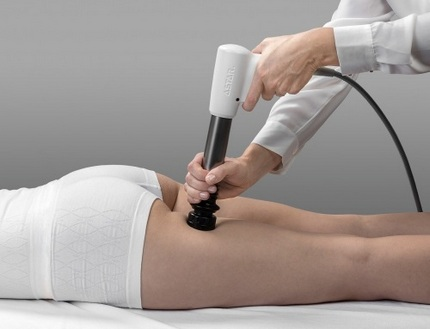
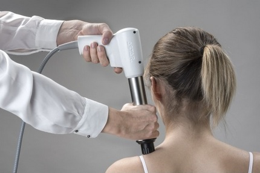
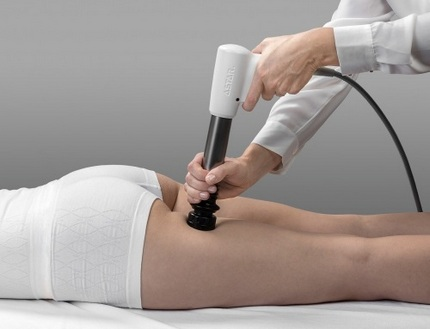
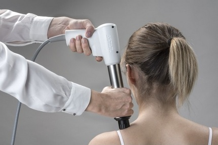

Fala uderzeniowa - nowoczesna metoda leczenia
Fizykoterapia nie przyniosła rezultatu? Nadal odczuwasz ból? Spróbuj zabiegu falą uderzeniową i wygraj z bólem. Metoda ta jest stosowana przy wielu jednostkach chorobowych, w których wyczerpały się klasyczne metody leczenia fizykoterapeutycznego.
Zalety:
- metoda nieinwazyjna,
- wystarczy kilka zabiegów,
- niskie koszty leczenia,
- szybki i skuteczny efekt.
Oddziaływanie biologiczne fali uderzeniowej
Terapia falą uderzeniową wykazuje działanie przeciwbólowe, ma wpływ na metabolizm komórkowy, poprawia przepływ krwi w miejscu objętym leczeniem oraz stymuluje regenerację tkanek miękkich. Efekt przeciwbólowy uzyskuje się poprzez zwiększenie przepływu krwi, dzięki czemu dochodzi do zmniejszenia odczynu zapalnego.Terapia jest wykorzystywana w leczeniu trudno gojących się złamań i stawów rzekomych. Falę stosuje się także u pacjentów z entezopatiami (np.: ostroga piętowa), służy również do kruszenia zwapnień w tkankach miękkich. Natomiast najnowsze wykorzystanie terapii uderzeniowej to walka z miejscową otyłością i cellulitem.
Na czym polega zabieg falą uderzeniową?
Wskazania do zabiegu falą uderzeniową:
- ostroga piętowa,
- zapalenie powięzi podeszwowej stopy,
- ból ścięgna Achillesa,
- ból ścięgien rzepki (kolano skoczka),
- ból przyczepów ścięgna udowego,
- zespół tarcia proksymalnego pasma biodrowo-piszczelowego,
- zapalenie przyczepu ścięgna do krętarza,
- bóle stawów barkowych ze zwapnieniami lub bez,
- wapniejące zapalenie ścięgien stawu barkowego,
- entezopatia nadkłykcia bocznego i przyśrodkowego (łokieć tenisisty i łokieć golfisty),
- wyrośla kostne w drobnych stawach dłoni w przypadku choroby zwyrodnieniowej stawów pierwszego stopnia,
- bolesne punkty spustowe,
- trudno gojące się rany.
Przeciwwskazania do stosowania fali uderzeniowej:
- zaburzenia krzepnięcia krwi (hemofilia),
- stosowanie leków przeciwzakrzepowych,
- zakrzepica,
- choroba nowotworowa,
- ciąża,
- polineuropatia w cukrzycy,
- ostre stany zapalne,
- dzieci w okresie wzrostu,
- terapia kortyzonowa do 6 tygodni przed pierwszą terapią.
- odkładanie złogów wapniowych w ścięgnach mięśni odpowiedzialnych za ruch w stawie barkowym,
- zapalenie kaletki podbarkowej (struktura odpowiadająca za zmniejszenie tarcia),
- zapalenie pochewki maziowej,
- przerwanie ścięgna,
- bark zamrożony.
Terapia falą uderzeniową jest dla większości pacjentów bezbolesna i nie wymaga znieczulenia oraz stosowania środków farmakologicznych. Często jednak przed zabiegiem wykonywane jest schładzanie parami ciekłego azotu – krioterapia.
Za mięśniowo-powięziowe punkty spustowe bólu przyjmuje się nadpobudliwe ogniska w mięśniach i powięzi związane z napiętymi pęczkami mięśniowymi. Punkty spustowe wykrywa się palpacyjnie, a ich uciśnięcie powoduje miejscowy skurcz i ból rzutowany dystalnie względem miejsca uciśnięcia. Działanie przeciwbólowe na punkty spustowe jest niezwykle ważnie ze względu na to, że bolesne punkty upośledzają prawidłowe funkcjonowanie układu ruchu. Dzięki szybkiej i skutecznej terapii, można uniknąć ograniczeń w elastyczności tkanek i przeciążeń mechanicznych.
Entezopatie
Przyczyną bólu przy entezopatii są zbyt naprężone mięśnie w miejscu ich przyczepu do kości. Pojedyncze włókna ścięgna odrywają się od objętego procesem patologicznym miejsca (np. pozbawionej okostnej kości).
Taka sytuacja kliniczna prowadzi do wytworzenia wyrośli kostnych tzw. entezofitów, które osłabiają układ kostno-mięśniowy i może być przyczyną patologicznych zerwań połączenia ścięgnisto-kostnego. Do tego rodzaju schorzeń
zaliczamy: tzw. kolano skoczka, zapalenie rozcięgna podeszwowego, ostrogi piętowe.
Najczęstszą przyczyną bólu w stawie jest stan zapalny któregoś z elementów stawu lub samo zwyrodnienie stawu. Czasem dyskomfort może pojawiać się tylko przy niektórych ruchach, a pierwsze objawy często są niezauważane w porę przez co przybierają na sile i przechodzą w stan przewlekły (np.: zapalenie kaletki krętarzowej). Jedną z najczęściej występujących przypadłości w kończynie górnej jest zespół bolesnego barku. Ze względu na sposób powstawania wyróżnia się następujące jego postacie przerwanie pierścienia mięśni rotatorów.
Medycyna sportowa
Uprawianie sportu wiąże się często z ryzykiem urazów, przeciążeń, mikrouszkodzeń, które często prowadzą do powstania rozległego procesu patologicznego. Dlatego tak ważna jest profilaktyka przed i
właściwa rehabilitacja gdy już dojdzie do urazu. Do częstych dolegliwości należą zespoły bólowe takie jak „łokieć tenisisty”, „łokieć golfisty”, „kolano skoczka”, jak i bóle w okolicy
ścięgna Achillesa. I tu fala uderzeniowa jest najlepszą metodą leczenia.
Kolejną zaletą fali uderzeniowej jest jej wpływ na przyspieszenie zrostu kostnego. Powoduje również szybszy remodeling kości. Dla uzyskania efektów wystarczy już jedna sesja terapeutyczna.
Zabiegi upiększające
Zabieg fali uderzeniowej stosowany jest również w kosmetologii i medycynie estetycznej do walki z cellulitem i otyłością. Fala mechaniczna podobnie jak intensywny masaż znacznie poprawia mikrokrążenie
i drenaż żylno-limfatyczny w obrębie skóry i tkanki podskórnej. Powoduje zwiększenie przepuszczalności błony komórkowej adipocytów, ułatwiając uwalnianie zawartych w nich substancji. Podstawową zasadą stosowania zabiegów
fizykalnych w terapii cellulitu jest systematyczność w ich przeprowadzaniu. Optymalne efekty osiąga się stosując kompleksową fizykoterapię (falę uderzeniową dobrze łączyć ze stymulacją mięśniową tzw. lipolizą, ultradźwiękami,
masażem modelującym lub bańką chińską). Widoczne efekty terapii można obserwować po wykonaniu 10-15 zabiegów (zależnie od stopnia zaawansowania cellulitu).
 


